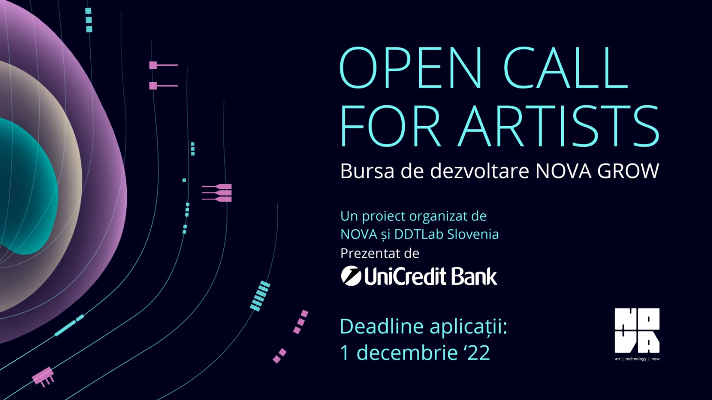

Festivalul NOVA și UniCredit Bank lansează programul de burse NOVA GROW

NOVA GROW se adresează tinerilor artiști pasionați de rolul noilor tehnologii în procesul creativ actual și are ca obiectiv oferirea unei burse de dezvoltare unui artist la început de drum.